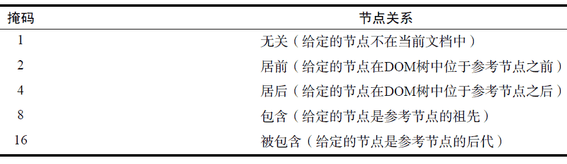

11.4 专有扩展
11.4.1 文档模式
IE8 引入了一个新的概念叫“文档模式”（document mode）。页面的文档模式决定了可以使用什么功能。换句话说，文档模式决定了你可以使用哪个级别的CSS，可以在JavaScript 中使用哪些API，以及如何对待文档类型（doctype）。到了IE9，总共有以下4 种文档模式。
-
IE5：以混杂模式渲染页面（IE5 的默认模式就是混杂模式）。IE8 及更高版本中的新功能都无法使用。
-
IE7：以IE7 标准模式渲染页面。IE8 及更高版本中的新功能都无法使用。
-
IE8：以IE8 标准模式渲染页面。IE8 中的新功能都可以使用，因此可以使用Selectors API、更多CSS2 级选择符和某些CSS3 功能，还有一些HTML5 的功能。不过IE9 中的新功能无法使用。
-
IE9：以IE9 标准模式渲染页面。IE9 中的新功能都可以使用，比如ECMAScript 5、完整的CSS3以及更多HTML5 功能。这个文档模式是最高级的模式。
要理解IE8 及更高版本的工作原理，必须理解文档模式。
要强制浏览器以某种模式渲染页面，可以使用HTTP 头部信息X-UA-Compatible，或通过等价的<meta>标签来设置：
<meta http-equiv="X-UA-Compatible" content="IE=IEVersion">
注意，这里IE 的版本（IEVersion）有以下一些不同的值，而且这些值并不一定与上述4 种文档模式对应。
-
Edge：始终以最新的文档模式来渲染页面。忽略文档类型声明。对于IE8，始终保持以IE8 标准模式渲染页面。对于IE9，则以IE9 标准模式渲染页面。
-
EmulateIE9：如果有文档类型声明，则以IE9 标准模式渲染页面，否则将文档模式设置为IE5。
-
EmulateIE8：如果有文档类型声明，则以IE8 标准模式渲染页面，否则将文档模式设置为IE5。
-
EmulateIE7：如果有文档类型声明，则以IE7 标准模式渲染页面，否则将文档模式设置为IE5。
-
9：强制以IE9 标准模式渲染页面，忽略文档类型声明。
-
8：强制以IE8 标准模式渲染页面，忽略文档类型声明。
-
7：强制以IE7 标准模式渲染页面，忽略文档类型声明。
-
5：强制将文档模式设置为IE5，忽略文档类型声明。
比如，要想让文档模式像在IE7 中一样，可以使用下面这行代码：
<meta http-equiv="X-UA-Compatible" content="IE=EmulateIE7">
如果不打算考虑文档类型声明，而直接使用IE7 标准模式，那么可以使用下面这行代码：
<meta http-equiv="X-UA-Compatible" content="IE=7">
没有规定说必须在页面中设置X-UA-Compatible。默认情况下，浏览器会通过文档类型声明来确定是使用最佳的可用文档模式，还是使用混杂模式。
通过document.documentMode 属性可以知道给定页面使用的是什么文档模式。这个属性是IE8中新增的，它会返回使用的文档模式的版本号（在IE9 中，可能返回的版本号为5、7、8、9）：
var mode = document.documentMode;
知道页面采用的是什么文档模式，有助于理解页面的行为方式。无论在什么文档模式下，都可以访问这个属性。
11.4.2 children属性
由于IE9 之前的版本与其他浏览器在处理文本节点中的空白符时有差异，因此就出现了children属性。这个属性是HTMLCollection 的实例，只包含元素中同样还是元素的子节点。除此之外，children 属性与childNodes 没有什么区别，即在元素只包含元素子节点时，这两个属性的值相同。
下面是访问children 属性的示例代码：
var childCount = element.children.length;
var firstChild = element.children[0];
支持children 属性的浏览器有IE5、Firefox 3.5、Safari 2（但有bug）、Safari 3（完全支持）、Opera8和Chrome（所有版本）。IE8 及更早版本的children 属性中也会包含注释节点，但IE9 之后的版本则只返回元素节点。
11.4.3 contains()方法
在实际开发中，经常需要知道某个节点是不是另一个节点的后代。IE 为此率先引入了contains()方法，以便不通过在DOM文档树中查找即可获得这个信息。调用contains()方法的应该是祖先节点，也就是搜索开始的节点，这个方法接收一个参数，即要检测的后代节点。如果被检测的节点是后代节点，该方法返回true；否则，返回false。以下是一个例子：
alert(document.documentElement.contains(document.body)); //true
这个例子测试了<body>元素是不是<html>元素的后代，在格式正确的HTML 页面中，以上代码返回true。支持contains()方法的浏览器有IE、Firefox 9+、Safari、Opera 和Chrome。
使用DOM Level 3 compareDocumentPosition()也能够确定节点间的关系。支持这个方法的浏览器有IE9+、Firefox、Safari、Opera 9.5+和Chrome。如前所述，这个方法用于确定两个节点间的关系，返回一个表示该关系的位掩码（ bitmask）。下表列出了这个位掩码的值。

为模仿contains()方法，应该关注的是掩码16。可以对compareDocumentPosition()的结果执行按位与，以确定参考节点（调用compareDocumentPosition()方法的当前节点）是否包含给定的节点（传入的节点）。来看下面的例子：
var result = document.documentElement.compareDocumentPosition(document.body);
alert(!!(result & 16));
执行上面的代码后，结果会变成20（表示“居后”的4 加上表示“被包含”的16）。对掩码16 执行按位操作会返回一个非零数值，而两个逻辑非操作符会将该数值转换成布尔值。
使用一些浏览器及能力检测，就可以写出如下所示的一个通用的contains 函数：
function contains(refNode, otherNode) {
if (typeof refNode.contains == "function" && (!client.engine.webkit || client.engine.webkit >= 522)) {
return refNode.contains(otherNode);
} else if (typeof refNode.compareDocumentPosition == "function") {
return !! (refNode.compareDocumentPosition(otherNode) & 16);
} else {
var node = otherNode.parentNode;
do {
if (node === refNode) {
return true;
} else {
node = node.parentNode;
}
} while ( node !== null );
return false;
}
}
运行一下
这个函数组合使用了三种方式来确定一个节点是不是另一个节点的后代。函数的第一个参数是参考节点，第二个参数是要检查的节点。在函数体内，首先检测refNode 中是否存在contains()方法（能力检测）。这一部分代码还检查了当前浏览器所用的WebKit 版本号。如果方法存在而且不是WebKit（!client.engine.webkit），则继续执行代码。否则，如果浏览器是WebKit 且至少是Safari 3（WebKit版本号为522 或更高），那么也可以继续执行代码。在WebKit 版本号小于522 的Safari 浏览器中，contains()方法不能正常使用。
接下来检查是否存在compareDocumentPosition()方法，而函数的最后一步则是自otherNode开始向上遍历DOM 结构，以递归方式取得parentNode，并检查其是否与refNode 相等。在文档树的顶端，parentNode 的值等于null，于是循环结束。这是针对旧版本Safari 设计的一个后备策略。
11.4.4 插入文本
前面介绍过，IE 原来专有的插入标记的属性innerHTML 和outerHTML 已经被HTML5 纳入规范。
但另外两个插入文本的专有属性则没有这么好的运气。这两个没有被HTML5 看中的属性是innerText和outerText。
1. innerText 属性
通过innertText 属性可以操作元素中包含的所有文本内容，包括子文档树中的文本。在通过innerText 读取值时，它会按照由浅入深的顺序，将子文档树中的所有文本拼接起来。在通过innerText 写入值时，结果会删除元素的所有子节点，插入包含相应文本值的文本节点。来看下面这个HTML 代码示例。
<div id="content">
<p>This is a <strong>paragraph</strong> with a list following it.</p>
<ul>
<li>Item 1</li>
<li>Item 2</li>
<li>Item 3</li>
</ul>
</div>
运行一下
对于这个例子中的<div>元素而言，其innerText 属性会返回下列字符串：
This is a paragraph with a list following it.
Item 1
Item 2
Item 3
由于不同浏览器处理空白符的方式不同，因此输出的文本可能会也可能不会包含原始HTML 代码中的缩进。
使用innerText 属性设置这个<div>元素的内容，则只需一行代码：
div.innerText = "Hello world!";
运行一下
执行这行代码后，页面的HTML 代码就会变成如下所示。
<div id="content">Hello world!</div>
设置innerText 属性移除了先前存在的所有子节点，完全改变了DOM子树。此外，设置innerText属性的同时，也对文本中存在的HTML 语法字符（小于号、大于号、引号及和号）进行了编码。再看一个例子。
div.innerText = "Hello & welcome, <b>\"reader\"!</b>";
运行一下
运行以上代码之后，会得到如下所示的结果。
<div id="content">Hello & welcome, <b>"reader"!</b></div>
设置innerText 永远只会生成当前节点的一个子文本节点，而为了确保只生成一个子文本节点，就必须要对文本进行HTML 编码。利用这一点，可以通过innerText 属性过滤掉HTML 标签。方法是将innerText 设置为等于innerText，这样就可以去掉所有HTML 标签，比如：
div.innerText = div.innerText;
执行这行代码后，就用原来的文本内容替换了容器元素中的所有内容（包括子节点，因而也就去掉了HTML 标签）。
支持innerText 属性的浏览器包括IE4+、Safari 3+、Opera 8+和Chrome。Firefox 虽然不支持innerText，但支持作用类似的textContent 属性。textContent 是DOM Level 3 规定的一个属性，其他支持textContent 属性的浏览器还有IE9+、Safari 3+、Opera 10+和Chrome。为了确保跨浏览器兼容，有必要编写一个类似于下面的函数来检测可以使用哪个属性。
function getInnerText(element) {
return (typeof element.textContent == "string") ? element.textContent: element.innerText;
}
function setInnerText(element, text) {
if (typeof element.textContent == "string") {
element.textContent = text;
} else {
element.innerText = text;
}
}
运行一下
这两个函数都接收一个元素作为参数，然后检查这个元素是不是有textContent 属性。如果有，那么typeof element.textContent 应该是"string"；如果没有，那么这两个函数就会改为使用innerText。可以像下面这样调用这两个函数。
setInnerText(div, "Hello world!");
alert(getInnerText(div)); //"Hello world!"
使用这两个函数可以确保在不同的浏览器中使用正确的属性。
实际上，innerText 与textContent 返回的内容并不完全一样。比如，innerText 会忽略行内的样式和脚本，而textContent 则会像返回其他文本一样返回行内的样式和脚本代码。避免跨浏览器兼容问题的最佳途径，就是从不包含行内样式或行内脚本的DOM 子树副本或DOM片段中读取文本。
2. outerText 属性
除了作用范围扩大到了包含调用它的节点之外，outerText 与innerText 基本上没有多大区别。
在读取文本值时，outerText 与innerText 的结果完全一样。但在写模式下，outerText 就完全不同了：outerText 不只是替换调用它的元素的子节点，而是会替换整个元素（包括子节点）。比如：
div.outerText = "Hello world!";
这行代码实际上相当于如下两行代码：
var text = document.createTextNode("Hello world!");
div.parentNode.replaceChild(text, div);
本质上，新的文本节点会完全取代调用outerText 的元素。此后，该元素就从文档中被删除，无法访问。
支持outerText 属性的浏览器有IE4+、Safari 3+、Opera 8+和Chrome。由于这个属性会导致调用它的元素不存在，因此并不常用。我们也建议读者尽可能不要使用这个属性。
11.4.5 滚动
如前所述，HTML5 之前的规范并没有就与页面滚动相关的API 做出任何规定。但HTML5 在将scrollIntoView()纳入规范之后，仍然还有其他几个专有方法可以在不同的浏览器中使用。下面列出的几个方法都是对HTMLElement 类型的扩展，因此在所有元素中都可以调用。
-
scrollIntoViewIfNeeded(alignCenter)：只在当前元素在视口中不可见的情况下，才滚动浏览器窗口或容器元素，最终让它可见。如果当前元素在视口中可见，这个方法什么也不做。如果将可选的alignCenter 参数设置为true，则表示尽量将元素显示在视口中部（垂直方向）。Safari 和Chrome 实现了这个方法。
-
scrollByLines(lineCount)：将元素的内容滚动指定的行高，lineCount 值可以是正值，也可以是负值。Safari 和Chrome 实现了这个方法。
-
scrollByPages(pageCount)：将元素的内容滚动指定的页面高度，具体高度由元素的高度决定。Safari 和Chrome 实现了这个方法。
希望大家要注意的是，scrollIntoView()和scrollIntoViewIfNeeded()的作用对象是元素的容器，而scrollByLines()和scrollByPages()影响的则是元素自身。下面还是来看几个示例吧。
//将页面主体滚动5 行
document.body.scrollByLines(5);
//在当前元素不可见的时候，让它进入浏览器的视口
document.images[0].scrollIntoViewIfNeeded();
//将页面主体往回滚动1 页
document.body.scrollByPages(-1);
由于scrollIntoView()是唯一一个所有浏览器都支持的方法，因此还是这个方法最常用。